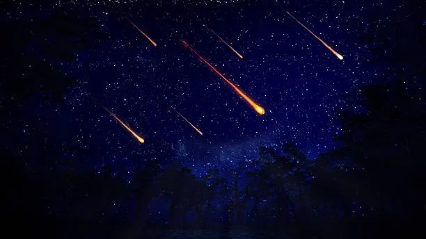
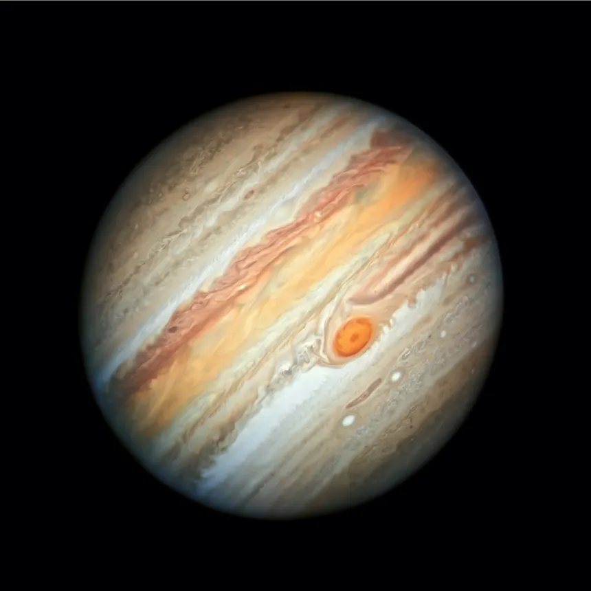
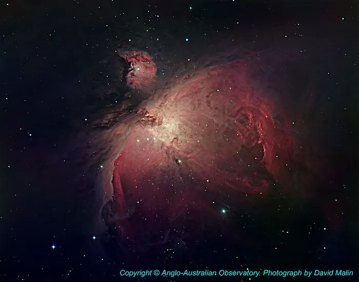
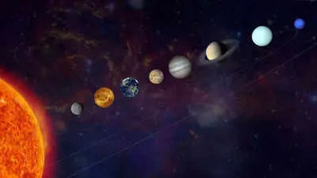
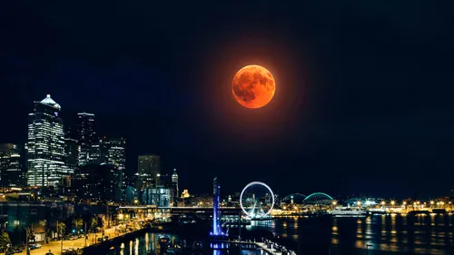

For thousands of years, humans have looked to the sky for answers— to mark time, predict eclipses, and understand the rhythms of the universe. What once required patience and observation can now be achieved through science, data, and computation.
Every celestial event—whether a solar eclipse, meteor shower, or planetary alignment—follows precise cosmic laws. Interstellar deciphers these patterns, transforming complex astronomical calculations into accurate and accessible predictions.
By blending ancient curiosity with modern technology, Interstellar helps you know what's happening in the sky, when it will happen, and why it matters—so you never miss a moment written in the stars.
Stay ahead of rare cosmic events — from meteor showers to auroras — powered by science and prediction.
Aurora Borealis, also known as the Northern Lights, is a breathtaking natural light display seen in polar regions. It occurs when charged particles from the Sun collide with Earth's atmosphere, creating glowing waves of green, purple, and blue light.
Aurora Australis, also known as the Southern Lights, is a stunning natural light display visible in the southern polar skies. It forms when charged solar particles interact with Earth's magnetic field near Antarctica. The sky glows with soft waves of pink, red, green, and violet light, moving like cosmic curtains. Unlike the Northern Lights, it is more remote and rarely seen, making it even more mysterious.